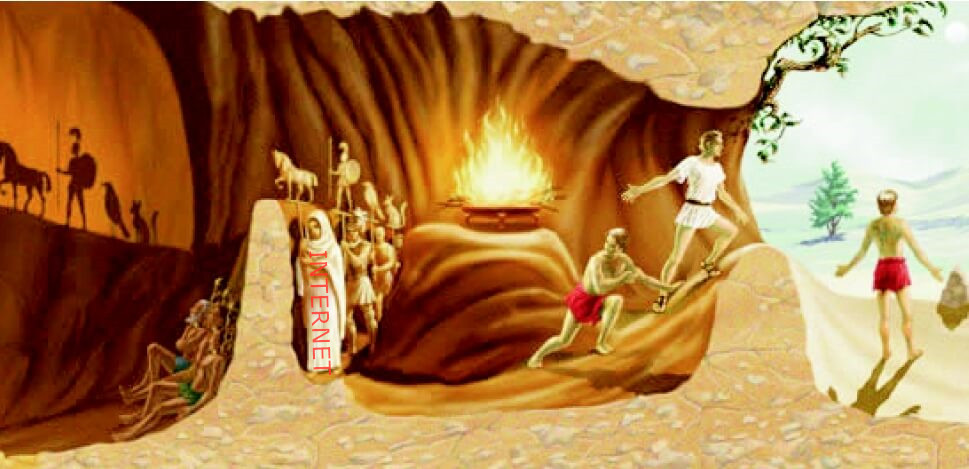

The Double Face of The Internet
The article Writing the History of Internet briefly introduces the evolution of the Internet and the controversies over whether the network is 'open' or 'close'. I feel this article very informative and I would like to cite some ideas that I consider important and explain my own thoughts about them.
The Background of the Net Invention
To start with,the predecessor of the Internet is ARPANET, which represents "The Advanced Research Projects Agency Network". It is a project initiated by the Defense Department of the United States. This article points out that “The rise of Net needs to be rooted in 1960s"——That is the time when America was in the Cold war with the Soviet Union.The development of the Internet has military concerns in the beginning. The Defense department funded the ARPANET project with the belief that an effective communication system and greater control of information could largely help the Intelligence Community with Cold War and other military goals.
In addition, during the Cold War, the American Intelligence Community invested in many advanced projects. There are even seemingly fictional projects such as "Remote viewing" or "Star Gate", for the purpose of collecting information remotely. CIA released document about Remote viewing
The Age of Netizens
After the cold war came to an end, the Internet grows so fast during the past decades that even the first creators might not expect. Now the Internet has penetrated into almost every corner of people's daily life——education, entertainment, social interaction, media, bank account... The network has become an indispensable part of our modern life, and citizens turn into Netizens. This also rises concerns about the side effects of the Net.
Internet, A powerful tool for surveillance?
"The Big Brother Is Watching You" This famous sentence comes from 《1984》, which is a prophetic and dystopia fiction book wrote by English novelist George Orwell and published in 1949. The book describes an extremely oppressive society where government surveillance become overwhelming and advanced technology——telescreens are used to spy on every citizen and keep them under control. Since the ruling party is capable of tracing people's behaviors,it is difficult for the ordinary to fight against such system.
{kind=link}
Living in 21st century, some people may still find the plot in 《1984》 not really far away from our daily life. The Age of Big Data is also an age without privacy. As we reveal almost every aspect of our life to the network, it is like we enpower the Internet to do Mind Readings. And the real question is, where could our personal information leaked to? who could potentially use our personal data? While tons of people would trust the authority and be consent with the surveillance, there are also some groups worrying about a hidden hand behind the curtain who would take advantage of strict censorship. While the Internet monitor can act like a weapon against the criminals, helping the government improve social security, the mass surveillance can also be used for detecting and shaping the mainstream's perspective, and for covering the voices that are considered a threat to the elites-controlled system. Like someone has said:"He Who Controls the Information Controls the World".
The confusion about Fake and Real
We are living in an era when people tend to know a country via online medias rather than traveling there, when people know a person by their posts online more than talking to them in person. However, is the world presented by the Net as real as what we think?
As the fake news filled with the network nowadays.There are some voices calling for "Purify the Internet". Some experts suggest that the government should put stronger laws against online disinformation. This sounds a good intention. However, the really problem is, how can we make sure what are fakes news, what are truths? Should we consider the seemingly out-of-box "conspiracy theories" as disinformation while taking the official announcements for granted? We should notice that it is not uncommon for political groups to eliminate dissidents in the name of "shoot down the bad guys".

The light in the dark
On the other hands, besides the negative influence, the article also reveals the open side of the Internet: the network also plays an important role in decentralized world of the antiwar movement and the counterculture. It is undeniable that there is a desire for free sharing of information all through the history of Internet evolution. Indeed the Net enables the normal people to gain infomration much more ealiser. Thus things like government corruptions are harder to hide. Undoubtedly, the birth of the network exposes the negative side of the closed world and widens the public's perspectives. However, such disclosure is often partial and biased.
In short, there are both pros and cons of the network and how should we get rid of the negative impacts is a challenge for us.
The future
Our network system is still expendingg. From the First Generation Cellular Network to now, we are heading to the 5G revolution and an age of the Internet of Things, with the artifical intelligence defeating human beings in many fields. Some futurists believe that the man-machine interaction will be updated---enter into the age of transhumanlism in the near furture. If this indeed happens, what will our life really be like?
I will write my ideas about this later.
Go back to Index
Back to Top